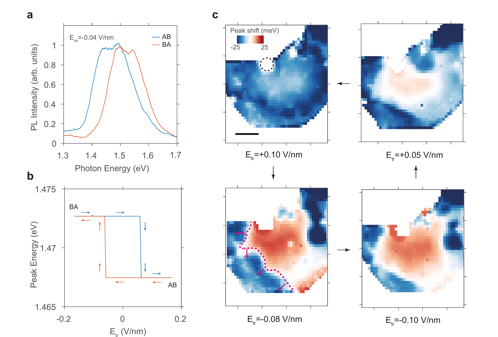
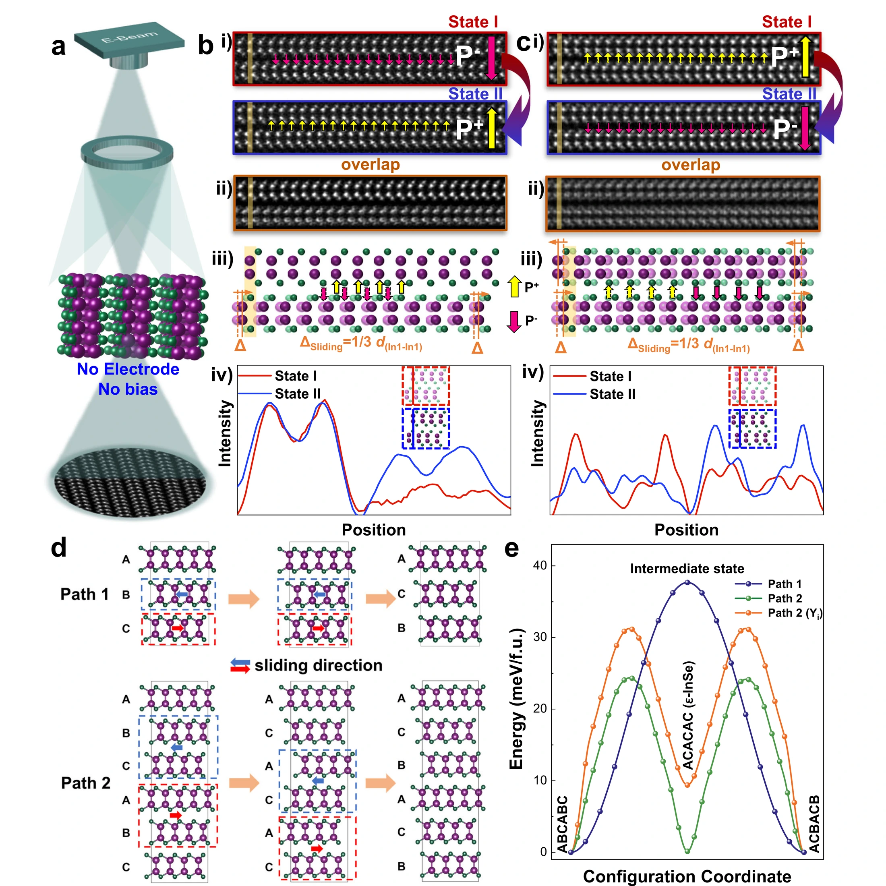

极化翻转，真的等于“整层一起滑过去”吗？
从静态的 AB / BA 极化走到真实翻转，必须先区分两种“路径”。一种是单胞尺度上的最低能量结构通道；另一种是器件里真正发生的空间过程——畴壁从哪里释放、哪个界面先动、是否经过 metastable stacking（亚稳堆垛）。这一章专门把两者拆开。
统一素材标准：论文均以项目 Google Drive 内 PDF 为权威版本；论文英文原文保持可选择、可复制，仅规范 PDF 连字与跨行断词，不改作者措辞；论文图从对应 PDF 页面以 600 DPI 渲染后精确裁切，保留完整分图、坐标轴、色标、箭头和标签；点击论文图可查看原尺寸。
给定起点和终点，哪些堆垛构型可以通过低能垒中间态互相连接？
样品里到底是谁先动：整片晶格，还是已经存在的畴壁？
多条路径并存时，不同位置的钉扎强弱和不同界面共同决定真正走哪一条。
1 · Yang 2024：矫顽场也可能主要反映局域“解钉”
Yang 等人在双层 3R-MoS₂ 中把极化翻转从一条滞回曲线拉回真实空间。AB / BA 区域的 Stark shift（Stark 位移）可以用来区分极化状态；训练电场真正改变的是畴壁位置，而不是一个抽象的“平均极化”。关键机制是：当外场造成的自由能差足以克服 local pinning potential（局域钉扎势）时，预存畴壁被释放，随后快速扫过光学探测区域。
The domain wall in 3R-MoS2 is a ~ 10 nm wide region connecting two polarization domains, where the stacking order smoothly transitions from one to the other. DWs are rare in chemically synthesized single crystals, but can be found in mechanically exfoliated flakes, where shear strain can induce avalanches of interlayer sliding. These DWs are usually trapped by pinning centers like defects, bubbles, or edges of the sample. When an external electric field is applied, one stacking order becomes more energetically favorable than the other, providing a driving force for the DW to propagate. In our device, as Eex becomes larger than Ec, the free energy difference is expected to overcome the local pinning potential and release a DW. The sharp transition in Fig. 2d suggests that the DW can propagate throughout the focus spot without getting pinned. The variation in Ec is therefore a result of the random distribution of pinning potentials. The asymmetric coercive fields in different switching directions arise from the difference in pinning centers between the initial and final states of a switch.
作者先说明畴壁通常会被缺陷、气泡或样品边缘钉住。外加电场使两种堆垛状态产生自由能差，从而给畴壁提供驱动力。当外场超过某个临界值时，这个自由能差可以克服局域钉扎势，释放畴壁。于是不同循环、不同翻转方向中 Ec 的差异，可以来自不同钉扎位置，而不一定意味着材料本征能垒本身发生变化。

a 用 AB / BA 的 PL 差异建立极化读出；b 是滞回；c 才是这里最关键的证据：不同训练电场之后，真实空间中的畴边界发生移动。粉色虚线标出了一个畴壁及其局域传播方向。
先用 a 的 AB / BA 光学读出认清两种极化，再看 c：不同训练电场后真正改变的是哪条空间畴边界的位置；b 的滞回放到最后看。
训练场改变了真实空间中的预存畴壁位置，翻转可以落实为畴壁从局域钉扎中心释放并快速传播，而不是只剩一条平均滞回曲线。
它支持该器件中“局域解钉 + 畴壁传播”对 E_c 和翻转路径的重要作用；不能把这里的 E_c 自动当作热力学 f_c，也不能由此宣布退钉扎普适类。
作者真正推进了什么
把一次极化翻转落实为“预存畴壁释放 + 传播”，并把不同循环或不同器件之间 Ec 的差异指向局域钉扎景观。
还不能推出什么
不能因此说所有滑移铁电都必须由同样的缺陷解钉；也不能把这里的 Ec 直接当作普适的退钉扎临界场。
2 · Sui 2024：原子尺度看到约 1/3 晶胞滑移，而且路径不止一条
Sui 等人研究的是 Y 掺杂 InSe，而不是 MoS₂。它在这条学习链里的价值，是把 sliding-induced reversal（滑移诱导的极化反转）直接落实到 HAADF-STEM 原子像中的层间位移。实验中，相邻单层或双层沿 AC 方向发生约 1/3 面内晶胞的相对滑移，对应面外极化反转。随后第一性原理给出两类结构路径：直观的单步 Path 1，以及经过 ACACAC 亚稳堆垛的两步 Path 2。
We should point out that (i) the interlayer sliding barrier in 2D vdW ferroelectric systems is theoretically low (Supplementary Table 2), e.g., ~0.15 meV/f.u. for bilayer WTe2 and ~7.5 meV/f.u. for bilayer 3R MoS2 with thickness-dependence; and (ii) during the Cs-(S)TEM measurements, besides the applied external electric field, the e-beam illumination also induces an electric field in nanoscale, whose intensity depends on the e-beam injection dose. It has been employed to flip the ferroelectric polarization in many ferroelectric materials including the hexagonal YMnO3 and the newly-emerging wurtzite ferroelectrics. Therefore, we carry out atomic-imaging on our InSe:Y samples only under the tunable e-beam illumination conditions without the probe and any external field (Fig. 4a). We clearly observe the interlayer sliding between adjacent layers driven by the weak e-beam-induced electric field. As shown in Fig. 4b, e and Supplementary Fig. 12, compared to the state I, this field makes the mainly-focused adjacent single layer or two layers slide along the AC direction (i.e., a fast interlayer sliding dynamic) by a 1/3 in-plane unit cell (Fig. 4bi, ci). This can be well rationalized in the overlapped images (Fig. 4bii, cii) and the intensity line profiles (Fig. 4biv, civ) of the states I and II involving the interlayer slide, which exactly leads to the opposite polarization (up and down vertically; confirmed by the atomic simulation results in Fig. 4biii, ciii) (also see Fig. 1b). This e-beam induced sliding behavior also provides evidence for the extra low sliding barriers between layers as predicted theoretically (Fig. 1e). The observations of one layer or two layers interlayer sliding-induced polarization switching pave the way for the potential application in ultrathin (from bulk to bi-/few-layered InSe) non-volatile memories.
Furthermore, first-principles calculations are employed to investigate the sliding-induced polarization reversal pathways along AC direction and the corresponding polarization (Supplementary Note 2). Based on the crystal structure of γ-InSe, or ABC-stacking in a unit cell, the sliding of two adjacent layers can intuitively lead to the polarization reversal (Supplementary Note 4), e.g., ABC to ACB (or path 1 in Fig. 4d, upper). The energy barrier for this path is calculated as 37.2 meV per formula unit (f.u.) (Fig. 4e). However, quite a few AC-stacking structures (or ε-InSe) are experimentally observed (Supplementary Fig. 13), which cannot be explained based on path 1. Instead, a two-step path with four layers moving together at each step is proposed (path 2 in Fig. 4d, lower). In the first step, four layers form two sliding units (marked by dashed rectangles) and they slide toward each other, making ABCABC stacking shift to ACACAC stacking (or ε-InSe), whereas new sliding units form in the second step and their toward-sliding makes ACACAC stacking shift to ACBACB stacking, resulting in the polarization reversal. The energy barriers of the two steps in path 2 are calculated to be ~24.1 meV/f.u., ~34% lower than the barrier of path 1, meaning path 2 has a higher probability to happen. Importantly, this new mechanism not only perfectly explains the existence of ε-InSe in γ-InSe, but also gets directly observed by in-situ STEM (Supplementary Fig. 13). For both proposed paths in 3-layer or 6-layer unit cells, the interlayer shift is limited to the long-path sliding (Supplementary Notes 3 and 4).
跨页恢复阅读顺序；仅规范 PDF 连字/换行断词，作者措辞未改。
实验部分真正直接看到的是：电子束诱导的弱电场能够驱动相邻一层或两层沿 AC 方向发生约 1/3 面内晶胞的相对滑移，同时极化方向反转。理论部分再解释为什么实际路径可能不止一种：直接的 ABC → ACB 路径能垒较高，而经过 ACACAC 中间堆垛的两步路径能垒更低，并且这种中间结构在实验中确实出现。因此“最低能路径”不是纯粹画在能量景观上的想象，而可能与真实中间结构对应。

b / c：单层或双层发生约 1/3 晶胞的原子级滑移；d：直接 Path 1 与经过 ACACAC 中间态的 Path 2；e：两条路径的能垒。这里的电子束驱动条件不能自动等同于常规器件中的电极驱动。
严格把两类 panel 分开：b/c 是原子像里实际观察到的约 1/3 晶胞相对滑移；d/e 是第一性原理给出的 Path 1 / Path 2 与对应能垒。
实验直接看到层间相对滑移伴随极化反转；计算显示经过 ACACAC 中间堆垛的两步路径可比直达路径更低，并能解释实验中出现的中间结构。
它证明原子级相对滑移和亚稳堆垛可以真实参与反转，但计算路径/能垒不是逐帧实验测得；电子束诱导场条件和 InSe:Y 的能垒也不能直接搬到普通 3R-MoS₂ 器件。
3 · Liang 2025：两个界面把一次翻转拆成两段
Liang 等人把三层 3R-MoS₂ 的路径选择进一步变成“逐界面”的问题。CBA 与 ABC 是两端极化态；如果上界面和下界面的畴壁不是同时释放，就会先得到 ABA 或 BAB。于是 intermediate state（中间态）不再只是能量景观上的一个点，而可以由“哪一条畴壁先越过自己的钉扎中心”直接生成。
To investigate the polarization switching mechanism, we apply an electric field to the same device as in Fig. 1 accross multiple cycles, observing variations in switching pathways and coercive fields. For example, in the backward scan of another cycle (Fig. 4a), the spectrum resembles Fig. 3a, indicating the same ABA stacking in the intermediate state but with different switching fields. On the other hand, the intermediate state in the forward scan (Fig. 4c) exhibits a large peak at 1.918 eV, which we attributed in the last section to BAB stacking. The hysteresis loop illustrating the two-stage switch in Fig. 4 is summarized in Fig. 4e. In the positive and negative field limits, the stacking configuration is CBA and ABC, respectively, while the intermediate state is BAB in the forward scan and ABA in the backward scan. The two-stage switching occurs as the external electric field provides a driving force to depin the DW at different interfaces sequentially, as depicted in Fig. 4b.
Initially, the sample has two pre-existing DWs located at the top and bottom interfaces, trapped by pinning centres such as defects and bubbles outside the optical probing area, resulting in a homogeneous CBA response. When the external field reaches E1 = −0.043 V nm−1, the top domain wall (DWt) is released from the pinning centre with a weaker pinning potential pt, causing a local switch from CBA to ABA. Subsequently, at E2 = −0.087 V nm−1, the bottom domain wall (DWb) is released from the pinning centres with a stronger pinning potential pb, causing ABA to switch to ABC. The difference between pt and pb determines the electric field window where the intermediate state ABA can be observed. The sequential release of DWt and DWb, forming the ABA state, is supported by the electric-field-dependent RC map showing real-space distribution of domains and DWs (Supplementary Figs. 5 and 6).
After being released from initial pinning centres on one side of the optical probe, the DW quickly sweeps through the focus spot, and finally becomes trapped again by the pinning centres on the other side of the probe. The sequence of the DW release and the intermediate state in the reverse scan depend on the strength of the final pinning centres (p′t and p′b). In the scan cycle in Fig. 4, p′t is smaller than p′b, and therefore DWt is released earlier than DWb, causing ABC to switch back to CBA through a BAB intermediate state. However, in the scan cycle in Fig. 1, p′t is larger than p′b, and the intermediate state becomes ABA (Supplementary Fig. 7).
原文跨双栏恢复正常阅读顺序；保留论文中的 “accross” 拼写。
三层样品里原本就有两条畴壁，分别位于上、下两个界面，并被不同强度的钉扎中心困住。外电场增大时，钉扎较弱的一条畴壁先释放，于是体系先从 CBA 变成 ABA；继续增大电场后，另一条畴壁才释放，最终到达 ABC。反向扫描时，如果两侧最终钉扎中心的相对强弱改变，释放顺序也会改变，于是中间态可以从 ABA 换成 BAB。这里真正决定路径的是两条畴壁的“解钉先后顺序”。

a / c 展示不同扫描中的两阶段跳变；b / d 给出中间态的光学响应；e 把净极化画成两阶段滞回；f 则把两条界面畴壁依次释放的机制画出来。
先看 a/c 的两阶段跳变和 ABA/BAB 中间态，再看 f 的两条界面畴壁；把哪个界面先释放与哪种中间堆垛一一对应。
三层体系的两个界面可以在不同场值依次解钉；上、下界面畴壁释放顺序改变时，中间态会在 ABA 与 BAB 之间切换。
它支持该三层器件中“钉扎层级选择逐界面路径”的机制；不能把这套释放顺序当成所有多层滑移铁电的固定路径，也没有建立临界退钉扎指数。
这里的中间态是什么
不是凭空出现的“第三种体相”。它对应三层体系中只有一个界面先完成局域翻转后形成的 ABA / BAB 堆垛。
为什么不同循环的路径会变
因为初始和最终钉扎中心的强弱组合会变化，DWt 与 DWb 的释放顺序随之改变；路径因此不是材料唯一、固定的常数。
4 · Dai 2026：三层体系不只是“两个独立界面”，畴壁之间还会互相作用
Liang 已经告诉我们，两个界面的解钉顺序会生成不同中间态。Dai 等人在三层 γ-InSe 上进一步研究原子尺度动力学：相邻层的畴壁可以位于不同位置，中间夹着非极性畴；外场下翻转会经历不同动力学阶段，而且多个畴壁的集体运动显示出明显的畴壁间相互作用。
三层体系的最小扩展： u1(y,t), u2(y,t) + Fint[u1−u2]
为什么这对翻转路径很重要
中间态不再只是“某个界面先动”的静态标签；两条畴壁的相对位置和相互作用本身也会进入动力学，因此阶段式翻转可以自然地从耦合界面体系中产生。
为什么这对后面的模型很重要
单一弹性线 u(y) 是一个刻意选择的最小问题，而不是多层滑移铁电的终极粗粒化。如果研究目标转向三层或更厚体系，就必须检查 coupled-interface degrees of freedom（耦合界面自由度）是否已经不可忽略。
把四篇压成一张物理图
单界面器件：已有畴壁被局域钉扎中心困住；超过局域阈值后释放并扫过较大区域。
原子尺度：相邻层确实发生有限位移；不同亚稳堆垛使多条结构路径可能竞争。
多界面器件：每个界面有自己的畴壁和钉扎；解钉顺序直接生成不同中间态。
多界面动力学：畴壁可以位于不同位置并相互作用；非极性中间区域和阶段式翻转本身也成为动力学自由度。
这一章结束后，下一步为什么必然是 Domain Walls？
因为“路径”已经不再只是 AB → BA 的几何路线。在 Yang 和 Liang 的实验里，真正决定何时翻转、哪个界面先翻、是否出现中间态的变量，都是畴壁是否存在、被什么钉住、什么时候释放，以及释放后怎样传播。所以 Module 03 不再继续罗列路径，而要问更根本的问题：真正运动的自由度到底是什么？